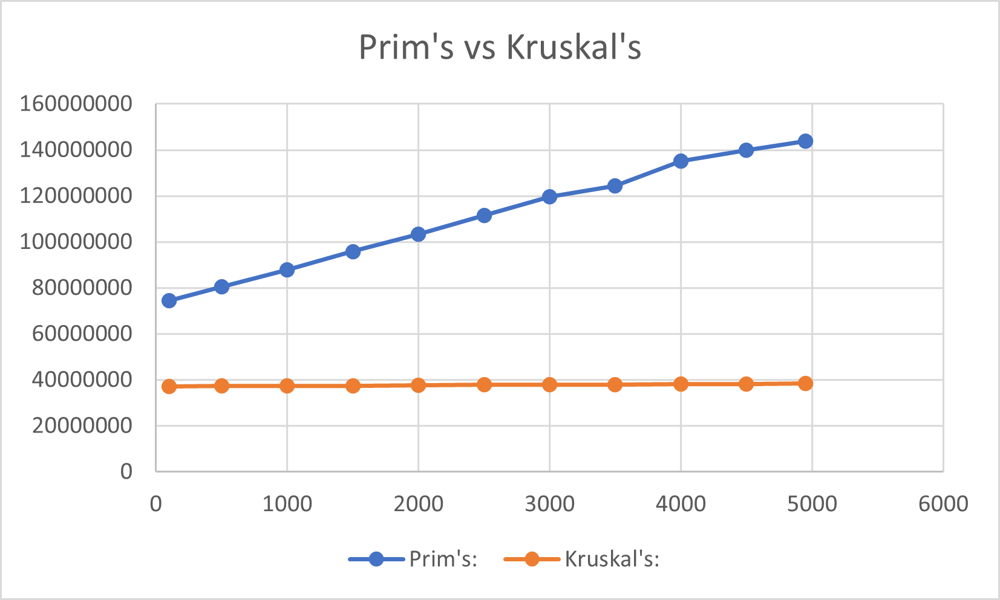

About Me
Currently, I am studying Computer Science at Northwest Missouri State University. This is my third year at Northwest, and I am becoming more and more excited to join the software/technology industry after graduation. My hometown is Brookfield, Missouri, a small town in North Central Missouri. In my free time, I often find myself being around my close friends, playing chess, or going to the gym.
Minimal Spanning Tree Project
This project dives into two different approaches in finding the minimal spanning tree of tree structures. I implemented both Prim's and Kruskal's alogrithms for finding the minimal spanning tree, and compared how they perfermed over various graph sizes. The graph library I used for this project was JGraphT.
In general, Prim's approach is to first pick a node in our graph at random. Once we have an initial node, we repeatedly pick the lightest edge that connects a node we have visited to a node we have not, until our number of edges = number of nodes - 1.
Kruskal's algorithm continuously picks the lightest edge, that hasn't already been selected, that doesn't create a cycle in our minimal spanning tree so far. Again, you repeat this process until our number of edges = number of nodes - 1.
While the different approaches will perform differently depending on how you implement them, I still think it is interesting to see how they compare as our graph size gets larger. The sizes (number of edges in the graph) I chose were from the minimum number of edges (n-1) to the max number of edges a graph can have, in increments of ~500. All of the graphs had 100 nodes. The results of the timings can be seen to the right.
If you are interested in seeing how I chose to implement this project, feel free to take a look at the souce code.


(x-axis: number of edges, y-axis: time in nanoseconds)
Max Subarray Project
Like the project above, this project also implements two different approaches, but in finding the maximum continuous subarray of a given array of integers.
The brute force approach is to try every possible subarray of the array of integers, and find the one that results in the largest sum. In most cases, there is a better approach than brute force.
Kadane's algorithm is a common solution for finding the maximum continuous subarray. Kadane's alogorithm runs through the array once, and is always comparing the current running sum to the best (max) sum so far.
I tested both the brute force method and Kadane's with arrays of size 100 to 1000 in increments of 100, and plotted the results. As you can see, brute force performs worse and worse as the array size increases, while Kadane's held up against larger array sizes.
If you are interested in seeing how I chose to implement this project, feel free to take a look at the souce code.


Sudoku Solver
The sudoku solver was a project that I found really interesting. Given a semi-empty "sudoku board", this program could figure out the correct solution for the board if a possible solution exists. My approach to this solution was somewhat brute force, and solved it in a recursive fashion. For each empty square (which held a zero), if a number wasn't already in our row, column, or box, we placed that number in the empty square (temporarily), and we made our way to the next empty square and repeated the process until our chosen numbers don't fit into a solvable outcome. Once we realize our number choices from earlier won't result in solving the board, we jump back to the "problem square" to try the next number.
If you are interested in seeing how I chose to implement this project, feel free to take a look at the souce code.


Timing Sorting Algorithms
In this project, I implemented three different sorting methods to see how they perform against each other as the our list size increases. The methods I wanted to test were Insertion, Selection, and Merge sorts.
If you are interested in seeing how I chose to implement this project, feel free to take a look at the souce code.

(x-axis: number of elements, y-axis: time in nanoseconds)